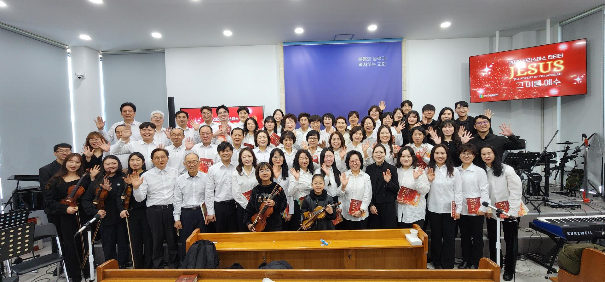

 모태신앙으로서 뱃속에서부터 교회를 다닌 꼬 마아이가 그 당시 시골마을인 청주에 살고 있 었습니다. 그 아이는 놀림과 따돌림으로 세상 에 문을 열기를 두려워서 혼자 있는 것을 좋 아하는 아이처럼 보였습니다. 그 아이가 어느 덧 훌쩍커서 고등학교에 갈 나이가 되었지만 부 모님은 피치못할 사정으로 그 아이의 일상생활에 간섭하게 되었습니다. 그 아이는 핸드폰도 바꾸 고 친구들과도 떨어진 학교에 배정되면서 그 아 이는 그토록 심한 공포감에 매여 있었습니다. 거기다가 새로들어간 교회는 처음 봤을 때 그 아이의 눈에는 그곳은 좋지 않은 곳이라 인식하게 되는 분위기를 만들었습니다. 생전 이단을 모르는 아이에게 이단을 경계하라는 터무니없는 소리를 하는 분을 보며 여기서 잘 적응할 수 있을까? 걱정했습니다. 하지만 청소년 사역을 담당하시던 목사님에 의하여 그 아이의 생활은 바뀌기 시작합니다. 한 5일 정도 지났을 무렵 상담을 무사히 마친 아이는 교회 수련회라는 곳에 참석해서 상록교회의 문화에 대해 알아가고, 또 소풍을 가며 친구들과 어울리는 방법을 배웁니다. 그렇게 그 아이는 공동체 속에서 크면서 세례도 받고 구원의 확신도 갖게 되면서 자신의 믿음이 성장하게 됨을 느끼게 됨과 동시에 과중이라는 곳에 가게되고 타락의 길을 걷게 됩니다. 그럼에도 불구하고 하나님은 그 아이를 버리지 않았습니다. 그래서 그 아이에게 좋은 선생님인 북극곰을 붙여주셨습니다. 그치만 그 아이는 북극곰이 맘에 안 들어서 그 분의 말을 듣지 않았습니다. 그 분은 그 아이를 불쌍하게 생각하고 뭐라도 더 가르쳐주려고 애썼지만 말을 안듣는 아이를 보면서 화도 내기도 하고 자주 아이와 다투기도 하였습니다. 그러던 그 아이가 졸업하고 과중을 버리고 신앙이 식어갈 때쯤 그 아이는 자신의 이름대로 살기로 다짐하는 마음으로 교회 방송팀에 자원하여 들어갔습니다. 그 곳에서 자신을 너무 어린 아이 취급하시는 집사님들이 싫어서 대들기도 하고 다투기도 하면서 방송팀 생활을 이어가고 있었습니다. 너무나 트러블이 많이 생긴 나머지 집사님들은 그 청년을 내비두게 되었고 그 아이는 다시 타락의 길을 걷게됩니다. 하지만 그 중에 한 분은 그 청년을 포기하지 않고 늘 기다려주었습니다. 참으로 좋은 분이고 항상 따뜻했던 그 분으로 인해 청년은 세상에 닫혀있던 마음을 열고 그 교회의 문화를 받아들였습니다. 그 청년이 어느덧 21살이 되었고 교회는 이사를 가게 되었습니다. 그치만 새로운 곳에 적응을 못하고 또 싸우게 되고 그 싸움이 너무 격렬해져서 방송팀을 포기하게 되고 더 이상 그 선생님과는 연락이 되지 않았습니다. 그 아이는 또 그걸로 자신을 자책하며 다시 세상에 문을 닫으려고 했습니다. 그래서 그 청년은 이제 교회는 올해까지만 다닐까 고민하던 중에 난 아직 그 분이 기다려주신 시간에 반절도 제대로 기다려본 적이 없구나 우리 부모님도 포기하셨을 시간을 기다려주신 나의 신앙의 길잡이이자 영원한 멘토이신분의 배례를 기억하며 늦었지만 조금씩이라도 좋은 방향으로 변화하려고 매사에 노력하기로 다짐했습니다. 등대같이 부족한 사람들에게 밝은 빛을 비춰줄 수 있는 은혜를 비출 수 있는 그런 청년이 되겠습니다. 그냥 조용히 지켜봐주시고 응원해주세요. 사랑합니다.sjy+교회 모든 청년분들과 교역자들과 멋있는 집사님들 당신들이 있기에 제가 더욱 발전하고 성장합니다. 앞으로 상록교회에서 더욱 성장하는 청년이 되겠습니다. 읽어주셔서 감사합니다.